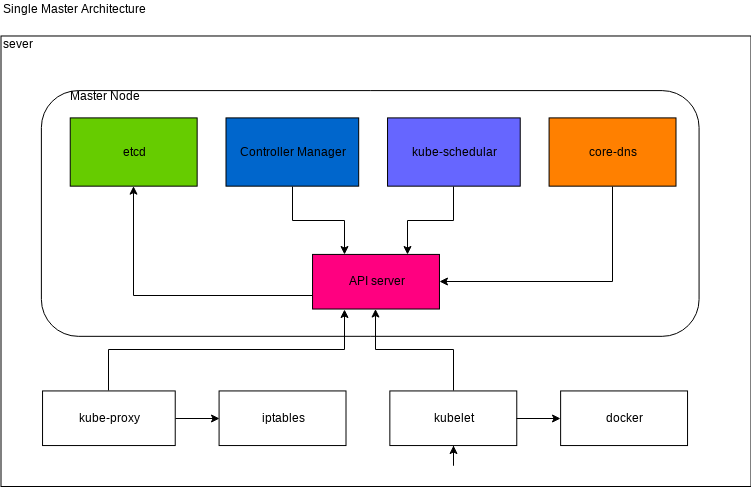
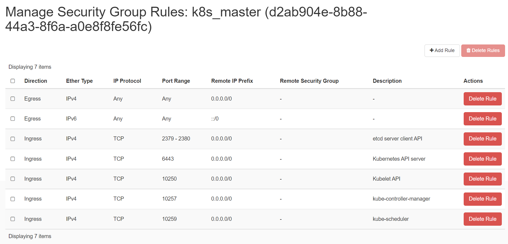
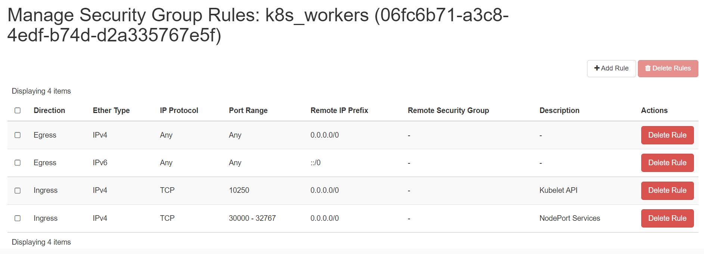
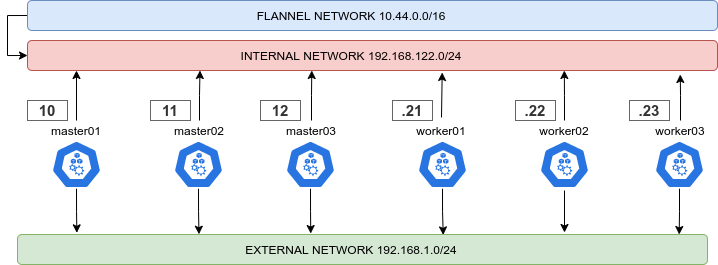
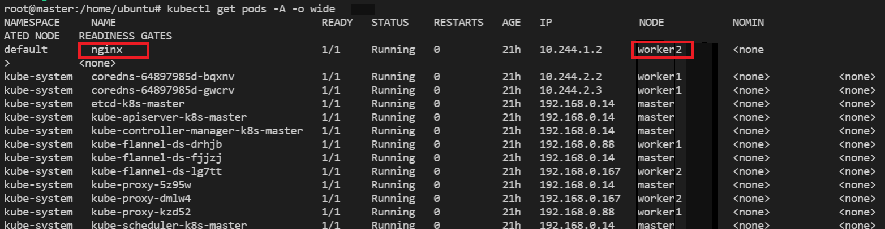
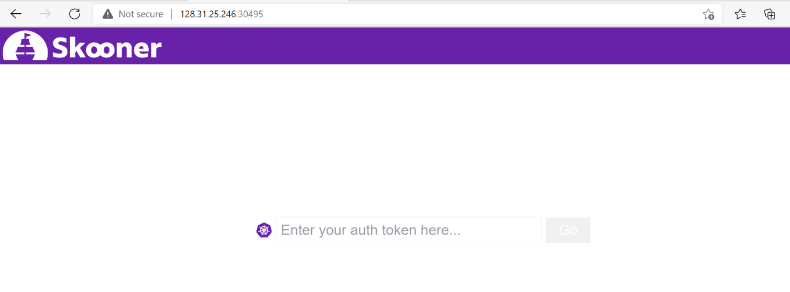

Creating a Single Master cluster with kubeadm
Objectives
- Install a single control-plane(master) Kubernetes cluster
- Install a Pod network on the cluster so that your Pods can talk to each other
- Deploy and test a sample app
- Deploy K8s Dashboard to view all cluster's components
Components and architecure

You can learn about each component from Kubernetes Componets.
Pre-requisite
We will need 1 control-plane(master) and 2 worker node to create a single
control-plane kubernetes cluster using kubeadm. We are using following setting
for this purpose:
- 1 Linux machine for master, ubuntu-20.04-x86_64, cpu-a.2 flavor with 2vCPU, 4GB RAM, 20GB storage.
- 2 Linux machines for worker, ubuntu-20.04-x86_64, cpu-a.1 flavor with 1vCPU, 2GB RAM, 20GB storage - also assign Floating IPs to both of the worker nodes.
- ssh access to all machines: Read more here on how to setup SSH to your remote VMs.
-
Create 2 security groups with appropriate ports and protocols:
i. To be used by the master nodes: 
ii. To be used by the worker nodes:  - setup Unique hostname to each machine using the following command:
echo "<node_internal_IP> <host_name>" >> /etc/hosts
hostnamectl set-hostname <host_name>
For example,
echo "192.168.0.167 master" >> /etc/hosts
hostnamectl set-hostname master
Steps
- Disable swap on all nodes.
- Install
kubeadm,kubelet, andkubectlon all the nodes. - Install container runtime on all nodes- you will be using
Docker. - Initiate
kubeadmcontrol plane configuration on the master node. - Save the worker node join command with the token.
- Install CNI network plugin i.e. Flannel on master node.
- Join the worker node to the master node (control plane) using the join command.
- Validate all cluster components and nodes are visible on master node.
- Deploy a sample app and validate the app from master node.
Install kubeadm, kubelet and docker on master and worker nodes
kubeadm will not install or manage kubelet or kubectl for you, so you will
need to ensure they match the version of the Kubernetes control plane you want kubeadm
to install for you. You will install these packages on all of your machines:
• kubeadm: the command to bootstrap the cluster.
• kubelet: the component that runs on all of the machines in your cluster and does things like starting pods and containers.
• kubectl: the command line util to talk to your cluster.
In this step, you will install kubelet and kubeadm on the below nodes
- master
- worker1
- worker2
The below steps will be performed on all the above mentioned nodes:
-
SSH into all the 3 machines
-
Switch as root:
sudo su -
Update the repositories and packages:
apt-get update && apt-get upgrade -y
- Turn off
swap
swapoff -a
sed -i '/ swap / s/^/#/' /etc/fstab
- Install
curlandapt-transport-https
apt-get update && apt-get install -y apt-transport-https curl
- Download the Google Cloud public signing key and add key to verify releases
curl -s https://packages.cloud.google.com/apt/doc/apt-key.gpg | apt-key add -
- add kubernetes apt repo
cat <<EOF | sudo tee /etc/apt/sources.list.d/kubernetes.list
deb https://apt.kubernetes.io/ kubernetes-xenial main
EOF
- Install kubelet, kubeadm, and kubectl
apt-get update
apt-get install -y kubelet kubeadm kubectl
apt-mark holdis used so that these packages will not be updated/removed automatically
apt-mark hold kubelet kubeadm kubectl
Install Docker
- Install container runtime - docker
sudo apt-get install docker.io -y
- Configure the Docker daemon, in particular to use systemd for the management of the container’s cgroups
cat <<EOF | sudo tee /etc/docker/daemon.json
{
"exec-opts": ["native.cgroupdriver=systemd"]
}
EOF
systemctl enable --now docker
usermod -aG docker ubuntu
systemctl daemon-reload
systemctl restart docker
- Ensure net.bridge.bridge-nf-call-iptables is set to 1 in your sysctl config
For more Read this.
sysctl net.bridge.bridge-nf-call-iptables=1
Configure kubeadm to bootstrap the cluster on master node
Run the below command on the master node i.e. master that you want to setup as
control plane.
- SSH into master machine
- Switch to root user:
sudo su - Execute the below command to initialize the cluster:
export MASTER_IP=<Master-Internal-IP>
kubeadm config images pull
kubeadm init --apiserver-advertise-address=${MASTER_IP} --pod-network-cidr=10.244.0.0/16
Important Note
Please make sure you replace the correct IP of the node with
<Master-Internal-IP> which is the Internal IP of master node.
--pod-network-cidr value depends upon what CNI plugin you going to use so
need to be very careful while setting this CIDR values. In our case, you are
going to use Flannel CNI network plugin so you will use:
--pod-network-cidr=10.244.0.0/16. If you are opted to use Calico CNI
network plugin then you need to use: --pod-network-cidr=192.168.0.0/16 and
if you are opted to use Weave Net no need to pass this parameter.
For example, our Flannel CNI network plugin based kubeadm init command with
master node with internal IP: 192.168.0.167 look like below:
For example,
export MASTER_IP=192.168.0.167
kubeadm config images pull
kubeadm init --apiserver-advertise-address=${MASTER_IP} --pod-network-cidr=10.244.0.0/16
Save the output in some secure file for future use. This will show an unique token
to join the control plane. The output from kubeadm init should looks like below:
Your Kubernetes control-plane has initialized successfully!
To start using your cluster, you need to run the following as a regular user:
mkdir -p $HOME/.kube
sudo cp -i /etc/kubernetes/admin.conf $HOME/.kube/config
sudo chown $(id -u):$(id -g) $HOME/.kube/config
Alternatively, if you are the root user, you can run:
export KUBECONFIG=/etc/kubernetes/admin.conf
You should now deploy a pod network to the cluster.
Run "kubectl apply -f [podnetwork].yaml" with one of the options listed at:
https://kubernetes.io/docs/concepts/cluster-administration/addons/
Please note that the certificate-key gives access to cluster sensitive data, keep
it secret!
As a safeguard, uploaded-certs will be deleted in two hours; If necessary, you
can use "kubeadm init phase upload-certs --upload-certs" to reload certs afterward.
Then you can join any number of worker nodes by running the following on each as
root:
kubeadm join 192.168.0.167:6443 --token cnslau.kd5fjt96jeuzymzb \
--discovery-token-ca-cert-hash sha256:871ab3f050bc9790c977daee9e44cf52e15ee37ab9834567333b939458a5bfb5
The output consists of 2 major tasks:
A. Setup kubeconfig using on current master node:
As you are running as root user so you need to run the following command:
export KUBECONFIG=/etc/kubernetes/admin.conf
We need to run the below commands as a normal user to use the kubectl from terminal.
mkdir -p $HOME/.kube
sudo cp -i /etc/kubernetes/admin.conf $HOME/.kube/config
sudo chown $(id -u):$(id -g) $HOME/.kube/config
Now the machine is initialized as master.
Warning
Kubeadm signs the certificate in the admin.conf to have
Subject: O = system:masters, CN = kubernetes-admin. system:masters is a
break-glass, super user group that bypasses the authorization layer
(e.g. RBAC). Do not share the admin.conf file with anyone and instead
grant users custom permissions by generating them a kubeconfig file using
the kubeadm kubeconfig user command.
B. Join worker nodes running following command on individual workder nodes:
kubeadm join 192.168.0.167:6443 --token cnslau.kd5fjt96jeuzymzb \
--discovery-token-ca-cert-hash sha256:871ab3f050bc9790c977daee9e44cf52e15ee37ab9834567333b939458a5bfb5
Important Note
Your output will be different than what is provided here. While performing the rest of the demo, ensure that you are executing the command provided by your output and dont copy and paste from here.
If you do not have the token, you can get it by running the following command on the control-plane node:
kubeadm token list
The output is similar to this:
TOKEN TTL EXPIRES USAGES DESCRIPTION EXTRA GROUPS
8ewj1p... 23h 2018-06-12 authentication, The default bootstrap system:
signing token generated by bootstrappers:
'kubeadm init'. kubeadm:
default-node-token
If you missed the join command, execute the following command
kubeadm token create --print-join-command in the master node to recreate the
token with the join command.
root@master:~$ kubeadm token create --print-join-command
kubeadm join 10.2.0.4:6443 --token xyzeyi.wxer3eg9vj8hcpp2 \
--discovery-token-ca-cert-hash sha256:ccfc92b2a31b002c3151cdbab77ff4dc32ef13b213fa3a9876e126831c76f7fa
By default, tokens expire after 24 hours. If you are joining a node to the cluster after the current token has expired, you can create a new token by running the following command on the control-plane node:
kubeadm token create
The output is similar to this:
5didvk.d09sbcov8ph2amjw
We can use this new token to join:
$ kubeadm join <master-ip>:<master-port> --token <token> \
--discovery-token-ca-cert-hash sha256:<hash>
Now that you have initialized the master - you can now work on bootstrapping the worker nodes.
- SSH into worker1 and worker2
- Switch to root user on both the machines:
sudo su - Check the output given by the init command on master to join worker node:
kubeadm join 192.168.0.167:6443 --token cnslau.kd5fjt96jeuzymzb \
--discovery-token-ca-cert-hash sha256:871ab3f050bc9790c977daee9e44cf52e15ee37ab9834567333b939458a5bfb5
-
Execute the above command on both the nodes:
-
Your output should look like:
This node has joined the cluster:
* Certificate signing request was sent to apiserver and a response was received.
* The Kubelet was informed of the new secure connection details.
Validate all cluster components and nodes are visible on all nodes
- Verify the cluster
kubectl get nodes
NAME STATUS ROLES AGE VERSION
master NotReady control-plane,master 21m v1.16.2
worker1 Ready <none> 9m17s v1.16.2
worker2 Ready <none> 9m25s v1.16.2
Install CNI network plugin
CNI overview
Managing a network where containers can interoperate efficiently is very
important. Kubernetes has adopted the Container Network Interface(CNI)
specification for managing network resources on a cluster. This relatively
simple specification makes it easy for Kubernetes to interact with a wide range
of CNI-based software solutions. Using this CNI plugin allows Kubernetes pods to
have the same IP address inside the pod as they do on the VPC network. Make sure
the configuration corresponds to the Pod CIDR specified in the kubeadm
configuration file if applicable.
You must deploy a CNI based Pod network add-on so that your Pods can communicate
with each other. Cluster DNS (CoreDNS) will not start up before a network is
installed. To verify you can run this command: kubectl get po -n kube-system:
You should see the following output. You will see the two coredns-* pods in a
pending state. It is the expected behavior. Once we install the network plugin,
it will be in a Running state.
Output Example:
root@master:~$ kubectl get po -n kube-system
NAME READY STATUS RESTARTS AGE
coredns-558bd4d5db-5jktc 0/1 Pending 0 10m
coredns-558bd4d5db-xdc5x 0/1 Pending 0 10m
etcd-master1 1/1 Running 0 11m
kube-apiserver-master1 1/1 Running 0 11m
kube-controller-manager-master1 1/1 Running 0 11m
kube-proxy-5jfh5 1/1 Running 0 10m
kube-scheduler-master1 1/1 Running 0 11m
Supported CNI options
To read more about the currently supported base CNI solutions for Kubernetes read here and also read this.
The below command can be run on the master node to install the CNI plugin:
kubectl apply -f https://github.com/coreos/flannel/raw/master/Documentation/kube-flannel.yml
As you had passed --pod-network-cidr=10.244.0.0/16 with kubeadm init so this
should work for Flannel CNI.
Using Other CNI Options
For Calico CNI plugin to work correctly, you need to pass
--pod-network-cidr=192.168.0.0/16 with kubeadm init and then you can run:
kubectl apply -f https://docs.projectcalico.org/v3.8/manifests/calico.yaml
For Weave Net CNI plugin to work correctly, you don't need to pass
--pod-network-cidr with kubeadm init and then you can run:
kubectl apply -f "https://cloud.weave.works/k8s/net?k8s-version=$(kubectl
version | base64 | tr -d '\n')"
- Dual Network: It is highly recommended to follow an internal/external network layout for your cluster, as showed in this diagram: 
To enable this just give two different names to the internal and external interface, according to your distro of choiche naming scheme:
external_interface: eth0
internal_interface: eth1
Also you can decide here what CIDR should your cluster use
cluster_cidr: 10.43.0.0/16
service_cidr: 10.44.0.0/16
Once you successfully installed the Flannel CNI component to your cluster. You can now verify your HA cluster running:
kubectl get nodes
NAME STATUS ROLES AGE VERSION
master Ready control-plane,master 22m v1.16.2
worker1 Ready <none> 10m v1.16.2
worker2 Ready <none> 10m v1.16.2
Watch Recoded Video
Here’s a quick recorded demo video upto this point where we successfully setup single master K8s cluster using Kubeadm.
Deploy A Sample Nginx Application
Now that we have all the components to make the cluster and applications work, let’s deploy a sample Nginx application and see if we can access it over a NodePort that has port range of 30000-32767.
The below command can be run on:
kubectl run nginx --image=nginx --port=80
kubectl expose pod nginx --port=80 --type=NodePort
To check which NodePort is opened and running the Nginx run:
kubectl get svc
The output will show:

Once the deployment is up, you should be able to access the Nginx home page on the allocated NodePort from either of the worker nodes' Floating IP.
To check which worker node is serving nginx, you can check NODE column
running the following command:
kubectl get pods --all-namespaces --output wide
OR,
kubectl get pods -A -o wide
This will shows like below:

Go to browser, visit http://<Worker-Floating-IP>:<NodePort>
i.e. http://128.31.25.246:32713 to check the nginx default page.
Here Worker_Floating-IP corresponds to the Floating IP of the nginx pod
running worker node i.e. worker2.
For your example,

Deploy A K8s Dashboard
You will going to setup K8dash/Skooner to view a dashboard that shows all your K8s cluster components.
- SSH into
masternode - Switch to root user:
sudo su - Apply available deployment by running the following command:
kubectl apply -f https://raw.githubusercontent.com/skooner-k8s/skooner/master/kubernetes-skooner-nodeport.yaml
This will map Skooner port 4654 to a randomly selected port from the master node. The assigned NodePort on the master node can be found running:
kubectl get svc --namespace=kube-system
OR,
kubectl get po,svc -n kube-system

To check which worker node is serving skooner-*, you can check NODE column
running the following command:
kubectl get pods --all-namespaces --output wide
OR,
kubectl get pods -A -o wide
This will shows like below:
Go to browser, visit http://<Worker-Floating-IP>:<NodePort> i.e.
http://128.31.25.246:30495 to check the skooner dashboard page.
Here Worker_Floating-IP corresponds to the Floating IP of the skooner-* pod
running worker node i.e. worker2.

Setup the Service Account Token to access the Skooner Dashboard:
The first (and easiest) option is to create a dedicated service account. Run the following commands:
- Create the service account in the current namespace (we assume default)
kubectl create serviceaccount skooner-sa
- Give that service account root on the cluster
kubectl create clusterrolebinding skooner-sa --clusterrole=cluster-admin --serviceaccount=default:skooner-sa
- Find the secret that was created to hold the token for the SA
kubectl get secrets
- Show the contents of the secret to extract the token
kubectl describe secret skooner-sa-token-xxxxx
Copy the token value from the secret and enter it into the login screen to access the dashboard.
Watch Demo Video
Here’s a recorded demo video on how to deploy applications on top of setup single master K8s cluster as explained above.
Clean Up
- To view the Cluster info:
kubectl cluster-info
- To delete your local references to the cluster:
kubectl config delete-cluster
How to Remove the node?
Talking to the control-plane node with the appropriate credentials, run:
kubectl drain <node name> --delete-emptydir-data --force --ignore-daemonsets
- Before removing the node, reset the state installed by kubeadm:
kubeadm reset
The reset process does not reset or clean up iptables rules or IPVS tables. If you wish to reset iptables, you must do so manually:
iptables -F && iptables -t nat -F && iptables -t mangle -F && iptables -X
If you want to reset the IPVS tables, you must run the following command:
ipvsadm -C
- Now remove the node:
kubectl delete node <node name>
If you wish to start over, run kubeadm init or kubeadm join with the
appropriate arguments.